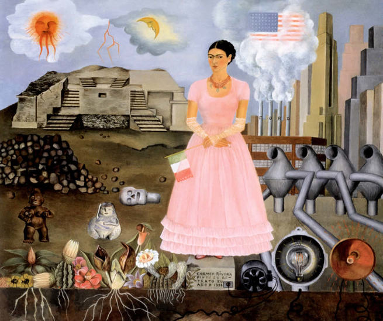
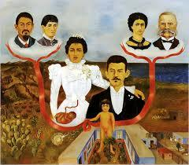

Frida Kahlo

Frida Kahlo (1907-1954) foi uma pintora mexicana conhecida por seus autorretratos de
inspiração surrealista e também por suas fotografias.
Frida Kahlo, nome artístico de Magdalena Carmen Frida Kahlo y Calderón, nasceu na vila de Coyoacán, no México,
no dia 6 de julho de 1907. Filha de pai alemão e mãe espanhola desde pequena teve uma saúde debilitada. Com seis
anos contraiu poliomielite que lhe deixou uma sequela no pé. Com 18 anos, sofreu um grave acidente de ônibus que
a deixou um longo período no hospital.
Apesar de deprimida e incapacitada de andar, Frida passou a pintar sua imagem, com um espelho pendurado na sua
frente e um cavalete adaptado para que pudesse pintar deitada. Dizia: “Para que preciso de pés quando tenho asas
para voar”. Sua primeira pintura foi “Autorretrato em um Vestido de Veludo”, dedicado a Alejandro Gómez Arias,
seu ex-noivo.
Em 1929, com 22 anos, Frida Kahlo casa-se com o Diego Rivera e vão morar na “Casa Azul”, onde Frida nasceu. Em
1930, Frida engravida, mas sofre um aborto espontâneo. Nesse mesmo ano, foi com o marido para os Estados Unidos,
onde ele realizava exposições. Moraram nas cidades de Detroit, São Francisco e Nova Iorque. Nesse período, sofre
um segundo aborto. Dedica à pintura, realiza um grande número de autorretratos – de inspiração surrealista,
apesar de negar dizendo: “Nunca pintei sonhos e sim minha própria realidade”.

Fronteira México e EUA

Meus avós, meus pais e eu